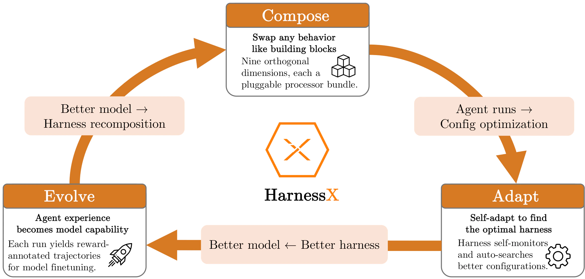
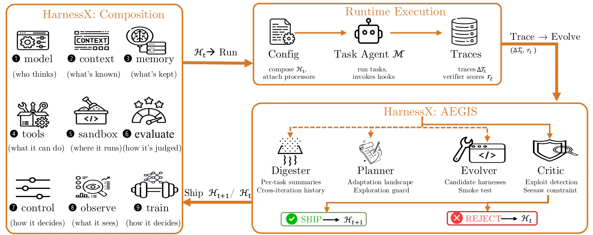
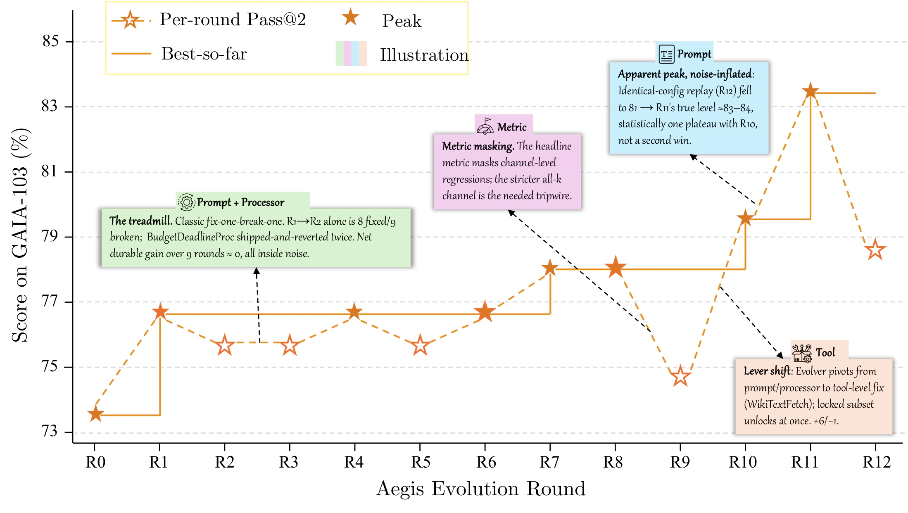
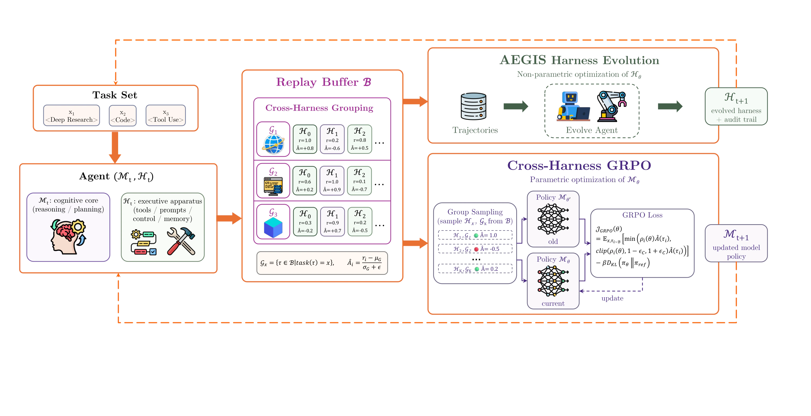

{kind=link}
Compose
Swap behavior across nine orthogonal dimensions without rewriting the agent.
Technical Report · 2026
A Composable, Adaptive, and Evolvable Agent Harness Foundry

Overview
An agent is more than a model call. Its harness decides how a task is represented, what context and memory persist between steps, which tools can be invoked, where side effects occur, how outcomes are scored, and which traces are retained. HarnessX makes this runtime interface a typed object that can be composed, audited, and improved from execution feedback.
Swap behavior across nine orthogonal dimensions without rewriting the agent.
Turn traces into bounded harness edits, then test and gate every candidate.
Convert reward-annotated trajectories into training signal for a better model.
Representative edit surfaces
An agent is represented as H = (M, C): model configuration M chooses role and fallback models, while C owns the behavior pipeline and shared runtime slots. Processors attach to lifecycle hooks, so a single behavior can be inserted, replaced, or removed without rebuilding the agent.
Typed interface: eight lifecycle hooks, same event type in and out, deterministic ordering, singleton groups, and serializable configurations.
AEGIS
AEGIS treats harness adaptation as reinforcement learning in symbolic space: the current harness and trace store form the state, a typed code-level edit is the action, and execution traces plus verifier scores provide feedback. One meta-agent selectively invokes four stages; only verified improvements become the next harness.

Compresses roughly 10M raw trace tokens from one GAIA pass@2 iteration → ~10K structured summaries with cross-round history.
Builds an adaptation landscape covering failed tasks, implicated components, and untried prompt, tool, processor, or config edits.
Emits typed builder candidates with a change manifest; new processor code also carries a smoke test.
Checks evidence and non-local risks, then verifies normalization, build checks, and regressions before shipping.
Every round: run the current harness, retain complete traces, test candidates on the same adaptation batch, and archive rejected edits with a reason.
Seesaw constraint: a candidate cannot regress a previously solved task. When tasks conflict, variant isolation can route them to separate harness versions instead of discarding a useful local fix.
Results
The evaluation spans GAIA, ALFWorld, WebShop, tau3-Bench, and SWE-bench Verified across three model families. The largest gains appear where the initial model has the most behavioral gaps; reported peak scores use the same task sets used for evolution.
Peak pass@2, percentage points
| Benchmark | Task agent | Initial | Peak | Gain |
|---|---|---|---|---|
| ALFWorld | Qwen3.5-9B | 53.0 | 97.0 | +44.0 |
| GAIA | Qwen3.5-9B | 20.3 | 37.4 | +17.1 |
| WebShop | GPT-5.4 | 55.0 | 73.0 | +18.0 |
| SWE-bench Verified | GPT-5.4 | 45.5 | 63.6 | +18.2 |
| tau3-Bench | GPT-5.4 | 76.2 | 90.7 | +14.5 |
Heterogeneous tasks: GAIA with GPT-5.4 stagnates under one global harness (73.8% peak, 49.5% final). Variant isolation reaches 87.4% with peak = final, +13.6 points over the static baseline, while using 107.8M vs 143.7M tokens.

Harness-model co-evolution
Each iteration rolls out the pair (Mt, Ht), scores traces with a fixed verifier, and appends them with their harness version to a FIFO replay buffer. AEGIS makes the discrete harness edit; cross-harness GRPO groups trajectories by task across harness versions and learns from their relative rewards. The next round starts with (Mt+1, Ht+1) without extra environment rollouts for the model update.

Measured gain
On GAIA (103 tasks) and WebShop (100 tasks) with Qwen3.5-9B, a four-round FIFO window lets both updates learn from the same recent trajectories. Interleaving cross-harness GRPO with AEGIS raises peak success by +4.7% on average over harness-only evolution.
GAIA: 37.4% to 41.7% (+4.3%). WebShop: 49.0% to 54.0% (+5.0%). The gap remains at the final round.
| Benchmark | Task agent | Initial | Peak | Gain |
|---|---|---|---|---|
| ALFWorld | Claude Sonnet 4.6 | 83.6 | 94.8 | +11.2 |
| ALFWorld | GPT-5.4 | 76.9 | 97.8 | +20.9 |
| ALFWorld | Qwen3.5-9B | 53.0 | 97.0 | +44.0 |
| WebShop | Claude Sonnet 4.6 | 60.0 | 76.0 | +16.0 |
| WebShop | GPT-5.4 | 55.0 | 73.0 | +18.0 |
| WebShop | Qwen3.5-9B | 36.0 | 49.0 | +13.0 |
| GAIA | Claude Sonnet 4.6 | 73.8 | 83.5 | +9.7 |
| GAIA | GPT-5.4 | 73.8 | 73.8 | 0.0 |
| GAIA | Qwen3.5-9B | 20.3 | 37.4 | +17.1 |
| SWE-bench Verified | Claude Sonnet 4.6 | 76.4 | 87.3 | +10.9 |
| SWE-bench Verified | GPT-5.4 | 45.5 | 63.6 | +18.2 |
| SWE-bench Verified | Qwen3.5-9B | 23.6 | 41.8 | +18.2 |
| tau3-Bench | Claude Sonnet 4.6 | 89.6 | 95.0 | +5.4 |
| tau3-Bench | GPT-5.4 | 76.2 | 90.7 | +14.5 |
| tau3-Bench | Qwen3.5-9B | 93.5 | 94.6 | +1.1 |
GAIA/Sonnet rose 74.8% to 79.6% through verifier-format regularities; trace analysis led to a cross-check guard two rounds later.
A sixth same-type reminder on tau3-Bench Telecom drove compliance from 94.7% to 80.7% at R7, then recovered by R9.
On ALFWorld/Sonnet, prompt edits yielded less than 1% per round from R4-R7 while ship-prediction accuracy fell from 80% to 0%.
Citation
The report contains the complete method, evaluation protocol, ablations, and failure analysis.
@techreport{darwinagent2026harnessx,
title = {HarnessX: A Composable, Adaptive, and
Evolvable Agent Harness Foundry},
author = {Darwin Agent Team},
year = {2026},
url = {https://github.com/Darwin-Agent/HarnessX}
}{kind=link}
{kind=link}
{kind=link}
{kind=link}